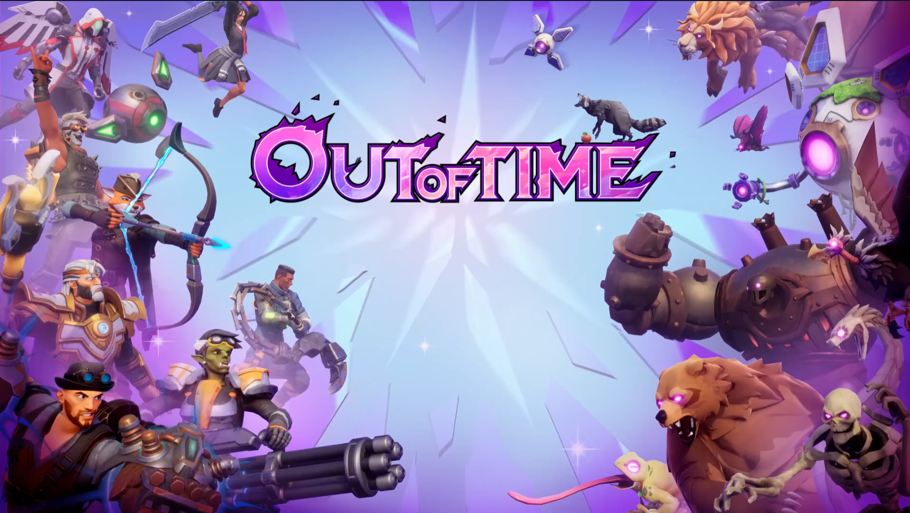

Joining Manticore Games in 2021, I spent over four years as a Senior, then Principal, UI/UX Designer, moving from high-level conceptual wireframing to full-stack UMG implementation. I navigated the project’s evolution through several complex genres—including an MMO, a user generated content editor, and a Lifestyle Simulator—culminating in the successful launch of Out of Time, a third-person co-op roguelike with an 85% positive Steam rating. This breadth of requirements allowed me to architect diverse UI systems, and by 2025, I transitioned into a more technical rollout role, refining my Unreal Engine skills through deep-level feature implementation and performance optimization.

- Role: UX/UI Designer and Team Lead
- Timeframe: October 2021 – February 2026
Squad and Social Features (2024-2026)
I worked with the product team on wireframes and design iterations for our squad and social UI, a core pillar of Out of Time's user experience. UI wireframes/designs were done by me in Figma, then formatted and imported for Unreal. UMG widgets that leveraged Common UI for controller support were used to create all the designs in Unreal; I also contributed to the engineering implementation in blueprints. The player tiles specifically had to be created in a modular way so they could be used in both squad and social panel experiences.
Both the squad and social panel UMG components were built by me, and then then I went in and helped hook up data, viewmodels, and animations with a UI Engineer. It was one of the more complex UIs I've ever built and it really was quite satisfying to see it all come together at the end.
Research
While initially researching for this project, we looked at social and MMO type games like Fortnite, Warframe and New World to inform our information hierarchy and layout ideas.
- • A tile-based approach seemed best since we would want to expand user actions and also use these tiles in a few places, like the squad panel
- • Tiles offered a quick way to discern if users were online or offline, if they were friends, and where they might be at any given moment.
Social Panel Iterations
Since our game relied heavily on co-op play, the social and squad panels had to do a lot of heavy lifting when it came to user experience while also being their own distinct screens. When looking at the social panel, it had to enable users to easily parse and take action on a few things:
- • Most importantly and located at the top of the list: Who wants to be your friend? And who is already your friend?
- • Next on the list, we wanted to be sure you could see immediately who was nearby and available to do a run.
- • Lastly, we wanted you to have a list of available players that you had recently played with. Since our queuing system could pop you into a run with anyone, we wanted you to be able to see who it was that did 12k damage as a tank/healer in that last run!
Squad Panel Iterations
The squad panel was a conundrum of "how much of the screen should we cover?" While the social panel was intended as a companion screen that you could have open while looking into the world, we felt the squad panel was a much more purposeful action taken by the player and should both represent your squaded state AND show you a social list of players you could specifically take squad actions on. We had so many conversations about whether or not it would negatively impact the user experience if the player couldn't see what was going on behind the screen, but in the end we did decide to do a full screen design. This enabled us to have a left hand "squad state" UI that could show up whether the panel was open or closed, as well as a specific "squad social panel" that would only show when you needed to form a squad or take specific squad actions.
Farming
One feature that was really a delight to work on was quite small, and it was focused on farming. We needed a way to keep players coming back to their plots every day, so we devised a farming feature that would take up real world time to grow and harvest a plant. The benefit to this system for a player was that they didn't have to go out and harvest in the wilds every time they needed an ingredient for crafting. We would also offer a way for players to pay to make a plant grow faster.

Plot Decorating (2023-2025)
As the UGC feature got underway, I played a core role in architecting how player's could bring their decorations onto their own plots. This was an exercise in keeping multiple complex mouse and keyboard controls in one area for the player to reference, while making sure it didn't cover any valuable screenspace while decorating. This was also a challenging design exercise for more didactic UI work, where I had to figure out how a player would know something was selected, if it was too large for their space, and how they would be able to manipulate it with their mouse cursor. We did a lot of case studies on Palia, Animal Crossing, and Disney Dreamlight Valley to inform our design decisions here.

User Generated Content (UGC) Editor (2022)
One of the longest running tasks I had during my time at Manticore was various design iterations of what a User Generated Content (UGC) editor could look like. I did a few designs for the team and ended up with a design from scratch, as well as a simplified version that would integrate seamlessly into our exiting Core editor. There were quite a few challenges:
- • In all of our iterations of the editor, the core concept stayed the same: to craft a UGC item, players would have to use in game resources and gold to publish them. This meant they had to see at all times how much it was going to cost them to build.
- • We had access to an almost
unlimited number of assets to build with and just as large of a catalogue of "plans" they could build off of - • I also had to know how players were going to be searching and grouping plans in their heads so they could better locate what they were looking for; it was almost like desiging the menu navigation for an ecommerce site. This ended up being a 2 month long card sorting and tree testing research exercise.